sem thumb
#1Sem thumb
Por que decidimos fazer o Anima Saúde? (sem "Ep #" no título, 28 min — provável #1)
com Berthaldo e Kenya
com Berthaldo e Kenya
com Dra. Ana Beatriz Barbosa · título na thumb: Vida corrida x saúde mental
▶ YouTube (canal Saúde) · ▶ YouTube (canal principal) · ✎ Canva (pág. 1) · ☁ Drive · ⬇ Download PNG
com Dra. Talita Melo · título na thumb: Não desista da maternidade
▶ YouTube (canal Saúde) · ▶ YouTube (canal principal) · ✎ Canva (pág. 2) · ☁ Drive · ⬇ Download PNG
com Dr. Raphael Rangel
▶ YouTube (canal Saúde) · ▶ YouTube (canal principal) · ✎ Canva (pág. 3) · ☁ Drive · ⬇ Download PNG
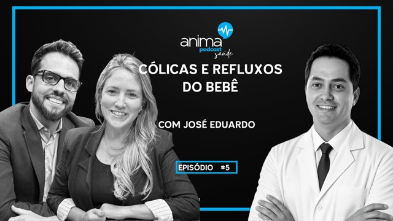
com Dr. José Eduardo · título na thumb: Cólicas e refluxos do bebê
▶ YouTube (canal Saúde) · ▶ YouTube (canal principal) · ✎ Canva (pág. 1) · ☁ Drive · ⬇ Download PNG
com Dra. Tuane Villela · título na thumb: É doença ou falta de ferro?
▶ YouTube (canal Saúde) · ▶ YouTube (canal principal) · ✎ Canva (pág. 4) · ☁ Drive · ⬇ Download PNG
com Dra. Angélica Ávila · título na thumb: Sinais de alerta do autismo
▶ YouTube (canal Saúde) · ▶ YouTube (canal principal) · ✎ Canva (pág. 2) · ☁ Drive · ⬇ Download PNG
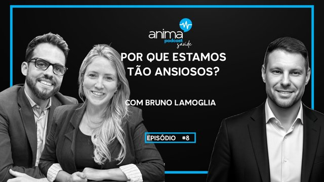
com Dr. Bruno Lamoglia · título na thumb: Por que estamos tão ansiosos?
▶ YouTube (canal Saúde) · ▶ YouTube (canal principal) · ✎ Canva (pág. 3) · ☁ Drive · ⬇ Download PNG
com Gil Gabriel · título na thumb: Medicina com propósito
▶ YouTube (canal Saúde) · ▶ YouTube (canal principal) · ✎ Canva (pág. 4) · ☁ Drive · ⬇ Download PNG
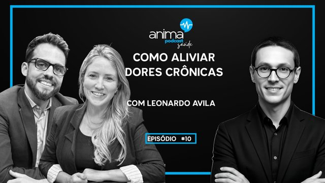
com Dr. Leonardo Avila
▶ YouTube (canal Saúde) · ▶ YouTube (canal principal) · ✎ Canva (pág. 5) · ☁ Drive · ⬇ Download PNG
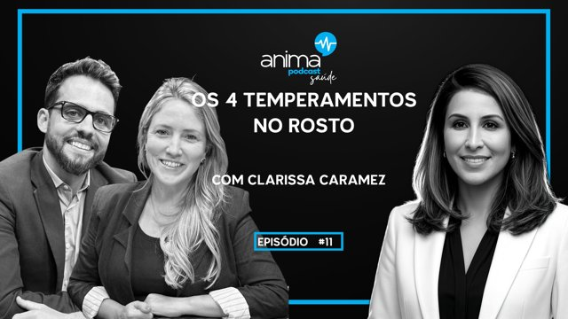
com Dra. Clarissa Caramez · título na thumb: Os 4 temperamentos no rosto
▶ YouTube (canal Saúde) · ▶ YouTube (canal principal) · ✎ Canva (pág. 6) · ☁ Drive · ⬇ Download PNG
com Dra. Mariana Vilas Boas · título na thumb: Como educar crianças autistas
▶ YouTube (canal Saúde) · ▶ YouTube (canal principal) · ✎ Canva (pág. 5) · ☁ Drive · ⬇ Download PNG
com Dra. Tamiris Rachid · título na thumb: A verdade sobre o emagrecimento
▶ YouTube (canal Saúde) · ▶ YouTube (canal principal) · ✎ Canva (pág. 6) · ☁ Drive · ⬇ Download PNG
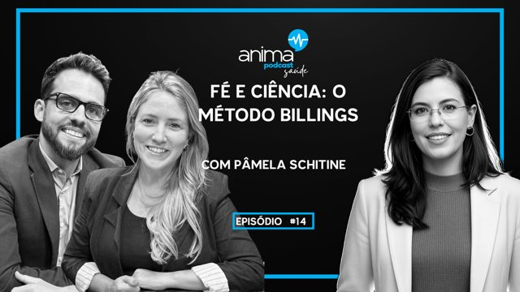
com Pâmela Schitine · título na thumb: Fé e ciência: o método Billings
▶ YouTube (canal Saúde) · ▶ YouTube (canal principal) · ✎ Canva (pág. 7) · ☁ Drive · ⬇ Download PNG
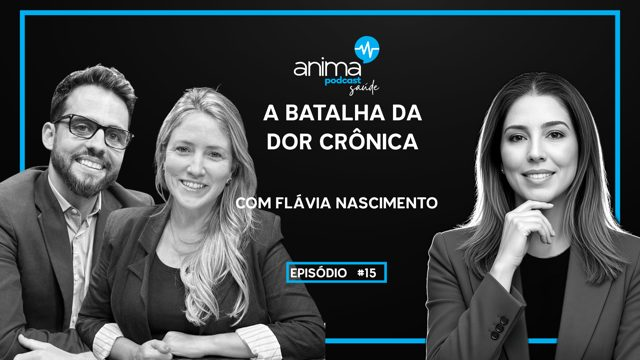
com Dra. Flávia Nascimento · título na thumb: A batalha da dor crônica
▶ YouTube (canal Saúde) · ▶ YouTube (canal principal) · ✎ Canva (pág. 8) · ☁ Drive · ⬇ Download PNG
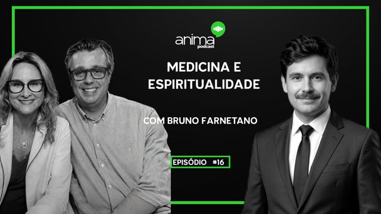
com Dr. Bruno Farnetano
▶ YouTube (canal Saúde) · ▶ YouTube (canal principal) · ✎ Canva (pág. 9) · ☁ Drive · ⬇ Download PNG
com Dr. Diogo Viana · título na thumb: Como os hormônios afetam você
▶ YouTube (canal principal) · ✎ Canva (pág. 10) · ☁ Drive · ⬇ Download PNG
com Cris Alberti · título na thumb: Emagrecer só com cirurgia?
▶ YouTube (canal principal) · ✎ Canva (pág. 11) · ☁ Drive · ⬇ Download PNG
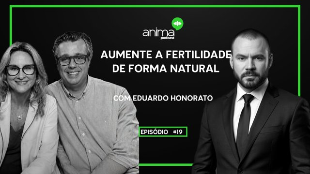
com Dr. Eduardo Honorato · título na thumb: Aumente a fertilidade de forma natural
▶ YouTube (canal principal) · ✎ Canva (pág. 12) · ☁ Drive · ⬇ Download PNG
com Dra. Bianca Quevedo · título na thumb: A verdade sobre a maternidade
▶ YouTube (canal principal) · ✎ Canva (pág. 13) · ☁ Drive · ⬇ Download PNG
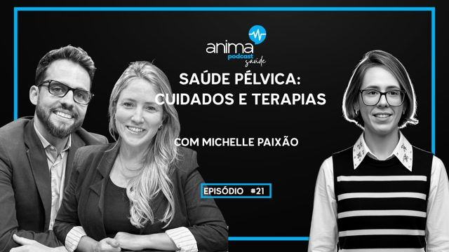
com Dra. Michelle Paixão · título na thumb: Saúde pélvica: cuidados e terapias
▶ YouTube (canal principal) · ✎ Canva (pág. 14) · ☁ Drive · ⬇ Download PNG
com Dra. Priscila Antunes · título na thumb: A saúde segundo Santa Hildegarda
▶ YouTube (canal principal) · ✎ Canva (pág. 15) · ☁ Drive · ⬇ Download PNG
com Aureanne Villacorta · título na thumb: Desfralde tardio e doenças
▶ YouTube (canal principal) · ✎ Canva (pág. 16) · ☁ Drive · ⬇ Download PNG
com Filipe Duarte · título na thumb: Fertilidade feminina sem mistérios
▶ YouTube (canal principal) · ✎ Canva (pág. 17) · ☁ Drive · ⬇ Download PNG
com Anderson Brito · título na thumb: Não é só gordurinha no fígado
▶ YouTube (canal principal) · ✎ Canva (pág. 18) · ☁ Drive · ⬇ Download PNG
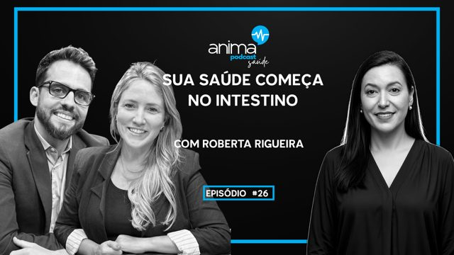
com Roberta Rigueira · título na thumb: Sua saúde começa no intestino
▶ YouTube (canal principal) · ✎ Canva (pág. 19) · ☁ Drive · ⬇ Download PNG
com Clara Morena · título na thumb: Consultório médico de sucesso
▶ YouTube (canal principal) · ✎ Canva (pág. 20) · ☁ Drive · ⬇ Download PNG
com Dr. Leonardo Jacobsen · título na thumb: Hormônios e a saúde feminina
▶ YouTube (canal principal) · ✎ Canva (pág. 21) · ☁ Drive · ⬇ Download PNG
com Dra. Carolina Delage · título na thumb: O valor da vida humana
▶ YouTube (canal principal) · ✎ Canva (pág. 22) · ☁ Drive · ⬇ Download PNG
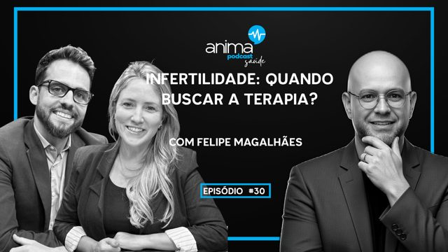
com Felipe Magalhães · título na thumb: Infertilidade: quando buscar a terapia?
▶ YouTube (canal principal) · ✎ Canva (pág. 23) · ☁ Drive · ⬇ Download PNG
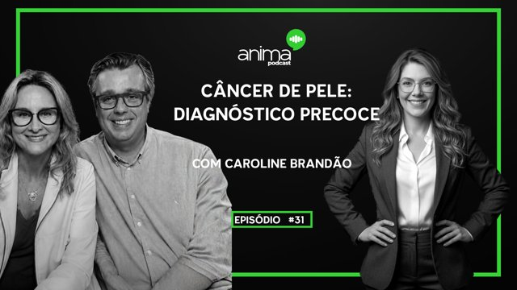
com Caroline Brandão · título na thumb: Câncer de pele: diagnóstico precoce
▶ YouTube (canal principal) · ✎ Canva (pág. 24) · ☁ Drive · ⬇ Download PNG
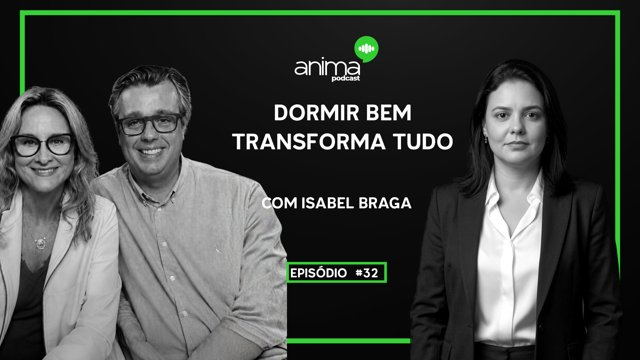
com Dra. Isabel Braga · título na thumb: Dormir bem transforma tudo
▶ YouTube (canal principal) · ✎ Canva (pág. 25) · ☁ Drive · ⬇ Download PNG
com Dr. Rodrigo Reis · título na thumb: Cuide bem do seu coração
▶ YouTube (canal principal) · ✎ Canva (pág. 26) · ☁ Drive · ⬇ Download PNG
com Dr. Marcelo Masruha · título na thumb: A saúde mental do seu filho
▶ YouTube (canal principal) · ✎ Canva (pág. 27) · ☁ Drive · ⬇ Download PNG
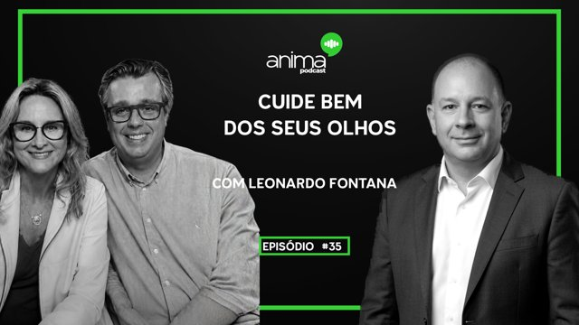
com Dr. Leonardo Fontana · título na thumb: Cuide bem dos seus olhos
▶ YouTube (canal principal) · ✎ Canva (pág. 28) · ☁ Drive · ⬇ Download PNG
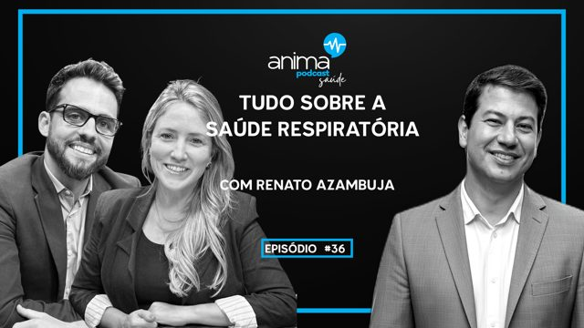
com Dr. Renato Azambuja · título na thumb: Tudo sobre a saúde respiratória
▶ YouTube (canal principal) · ✎ Canva (pág. 29) · ☁ Drive · ⬇ Download PNG
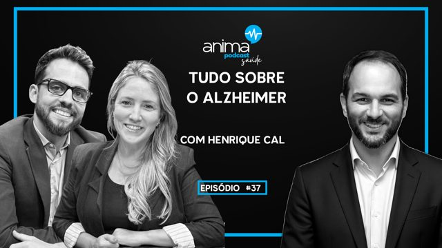
com Dr. Henrique Cal · título na thumb: Tudo sobre o Alzheimer
▶ YouTube (canal principal) · ✎ Canva (pág. 1) · ☁ Drive · ⬇ Download PNG
com Dra. Ana Carolina Goulart · título na thumb: Tudo sobre a saúde infantil
▶ YouTube (canal principal) · ✎ Canva (pág. 2) · ☁ Drive · ⬇ Download PNG
com Dr. Dario Leitão · título na thumb: Depressão: a doença do século XXI
▶ YouTube (canal principal) · ✎ Canva (pág. 3) · ☁ Drive · ⬇ Download PNG
com Drª Carol Barros · título na thumb: Nutrição para cada temperamento
▶ YouTube (canal principal) · ✎ Canva (pág. 4) · ☁ Drive · ⬇ Download PNG
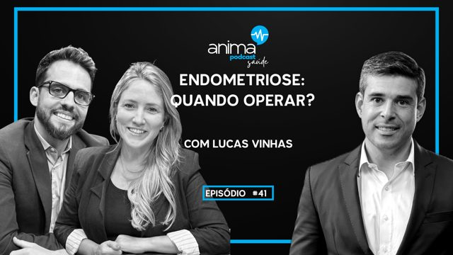
com Dr. Lucas Vinhas · título na thumb: Endometriose: quando operar?
▶ YouTube (canal principal) · ✎ Canva (pág. 5) · ☁ Drive · ⬇ Download PNG
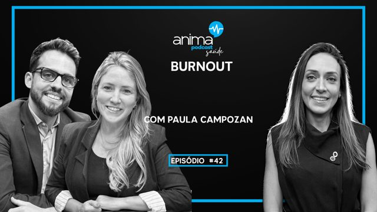
com Drª. Paula Campozan · título na thumb: Burnout
▶ YouTube (canal principal) · ✎ Canva (pág. 6) · ☁ Drive · ⬇ Download PNG
com Drª. Carina Brandão · título na thumb: Varizes: causas e soluções
▶ YouTube (canal principal) · ✎ Canva (pág. 7) · ☁ Drive · ⬇ Download PNG
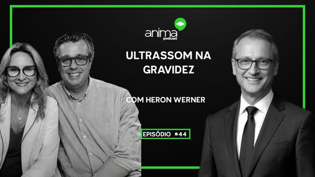
com Dr. Heron Werner · título na thumb: Ultrassom na gravidez
▶ YouTube (canal principal) · ✎ Canva (pág. 8) · ☁ Drive · ⬇ Download PNG
com Dr. João Marcos
▶ YouTube (canal Saúde) · ✎ Canva (pág. 9) · ☁ Drive · ⬇ Download PNG
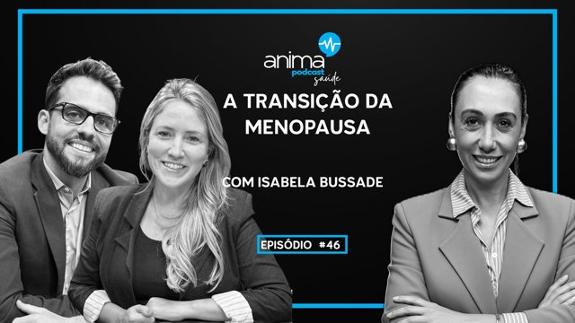
com Dra. Isabela Bussade · título na thumb: A transição da menopausa
▶ YouTube (canal Saúde) · ✎ Canva (pág. 7) · ☁ Drive · ⬇ Download PNG
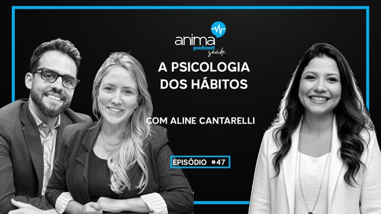
com Aline Cantarelli · título na thumb: A psicologia dos hábitos
▶ YouTube (canal Saúde) · ✎ Canva (pág. 8) · ☁ Drive · ⬇ Download PNG
com Dr. Bruno Messias · título na thumb: Cuidados com a pele na gestação
▶ YouTube (canal Saúde) · ✎ Canva (pág. 9) · ☁ Drive · ⬇ Download PNG
com Dra. Géssica Andrade
▶ YouTube (canal Saúde) · ✎ Canva (pág. 10) · ☁ Drive · ⬇ Download PNG
com Dra. Erika Vidal · título na thumb: O segredo da longevidade
▶ YouTube (canal Saúde) · ✎ Canva (pág. 11) · ☁ Drive · ⬇ Download PNG
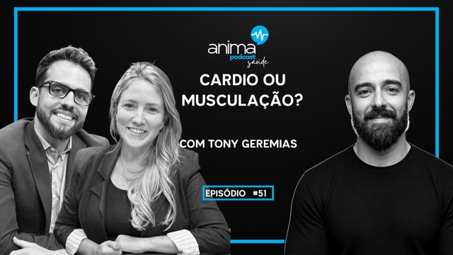
com Tony Geremias · título na thumb: Cardio ou musculação?
▶ YouTube (canal Saúde) · ✎ Canva (pág. 12) · ☁ Drive · ⬇ Download PNG
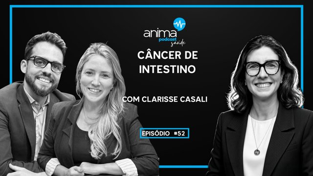
com Dra. Clarisse Casali · título na thumb: Câncer de intestino
▶ YouTube (canal Saúde) · ✎ Canva (pág. 13) · ☁ Drive · ⬇ Download PNG
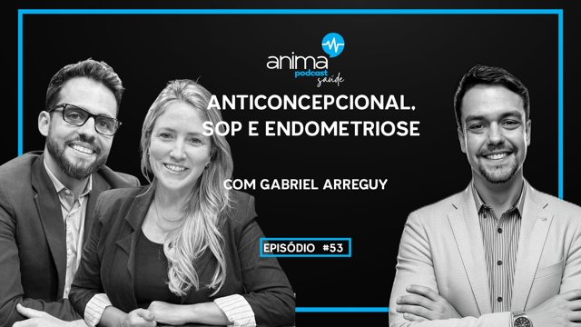
com Dr. Gabriel Arreguy · título na thumb: Anticoncepcional, SOP e endometriose
▶ YouTube (canal Saúde) · ✎ Canva (pág. 14) · ☁ Drive · ⬇ Download PNG
com Dr. Lourenço Alencar e Luísa Peleja · título na thumb: Como vencer o vício em nicotina
▶ YouTube (canal Saúde) · ✎ Canva (pág. 15) · ☁ Drive · ⬇ Download PNG
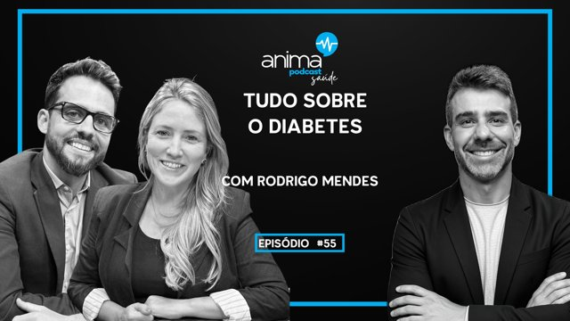
com Dr. Rodrigo Mendes · título na thumb: Tudo sobre o diabetes
▶ YouTube (canal Saúde) · ✎ Canva (pág. 16) · ☁ Drive · ⬇ Download PNG
com Dalila Faleiro · título na thumb: Dor na relação e o prazer
▶ YouTube (canal Saúde) · ✎ Canva (pág. 17) · ☁ Drive · ⬇ Download PNG
com Drª Caroline Cristofari · título na thumb: Engravidar com SOP
▶ YouTube (canal Saúde) · ✎ Canva (pág. 18) · ☁ Drive · ⬇ Download PNG
com Rachel Rebouças · título na thumb: Como identificar um narcisista
▶ YouTube (canal Saúde) · ✎ Canva (pág. 19) · ☁ Drive · ⬇ Download PNG
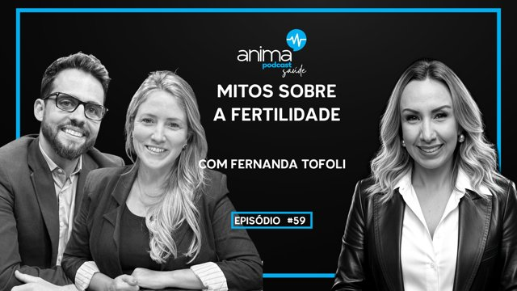
com Fernanda Tofoli · título na thumb: Mitos sobre a fertilidade
▶ YouTube (canal Saúde) · ✎ Canva (pág. 20) · ☁ Drive · ⬇ Download PNG
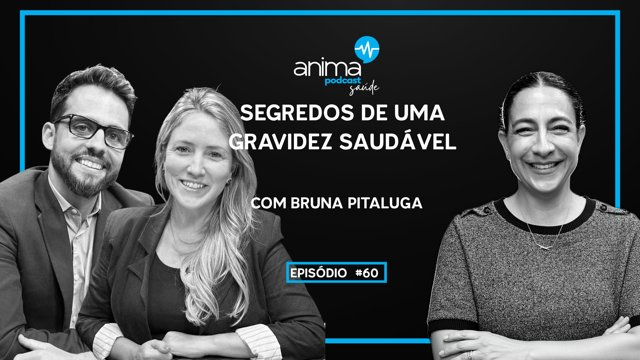
com Drª Bruna Pitaluga · título na thumb: Segredos de uma gravidez saudável
▶ YouTube (canal Saúde) · ✎ Canva (pág. 21) · ☁ Drive · ⬇ Download PNG
com Drª Bella Gurgel · título na thumb: Sua boca afeta toda a saúde
▶ YouTube (canal Saúde) · ✎ Canva (pág. 22) · ☁ Drive · ⬇ Download PNG
com Dra. Elisabete Pinheiro · título na thumb: Uma gestação saudável
▶ YouTube (canal Saúde) · ✎ Canva (pág. 23) · ☁ Drive · ⬇ Download PNG
com Drª Rafaelly Faitanin · título na thumb: Proteja a sua memória
▶ YouTube (canal Saúde) · ✎ Canva (pág. 24) · ☁ Drive · ⬇ Download PNG
com Letícia Cazarré · título na thumb: Maternidade real e saúde mental
▶ YouTube (canal Saúde) · ✎ Canva (pág. 25) · ☁ Drive · ⬇ Download PNG
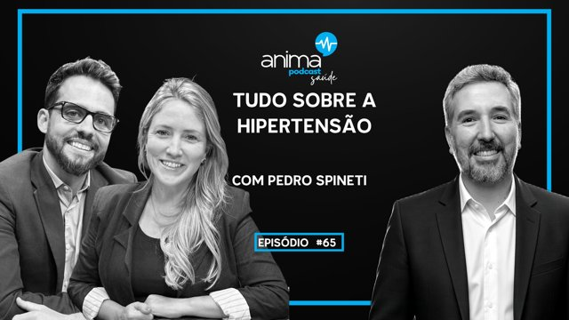
com Dr. Pedro Spineti · título na thumb: Tudo sobre a hipertensão
▶ YouTube (canal Saúde) · ✎ Canva (pág. 26) · ☁ Drive · ⬇ Download PNG
com Érika Nery · título na thumb: Fertilidade e medicina chinesa
▶ YouTube (canal Saúde) · ✎ Canva (pág. 27) · ☁ Drive · ⬇ Download PNG
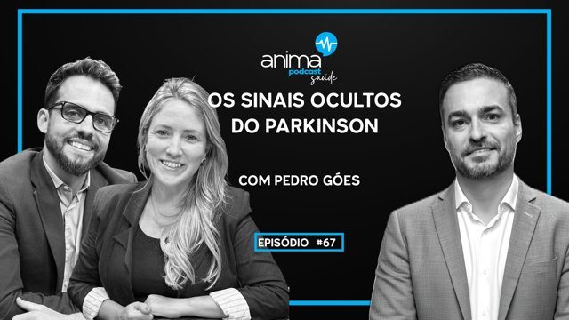
com Dr. Pedro Góes · título na thumb: Os sinais ocultos do Parkinson
▶ YouTube (canal Saúde) · ✎ Canva (pág. 28) · ☁ Drive · ⬇ Download PNG
com Fran Romanini · título na thumb: Vida plena após a lesão medular
▶ YouTube (canal Saúde) · ✎ Canva (pág. 29) · ☁ Drive · ⬇ Download PNG
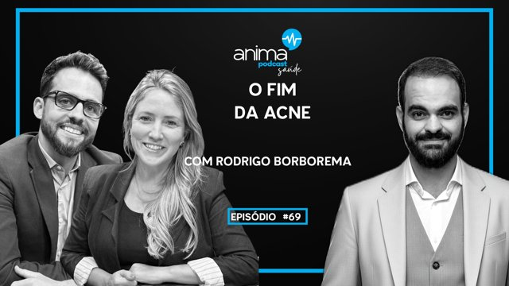
com Dr. Rodrigo Borborema · título na thumb: O fim da acne
▶ YouTube (canal Saúde) · ✎ Canva (pág. 30) · ☁ Drive · ⬇ Download PNG
com Kyra Gracie · título na thumb: Pilares de uma vida saudável
▶ YouTube (canal Saúde) · ✎ Canva (pág. 31) · ☁ Drive · ⬇ Download PNG
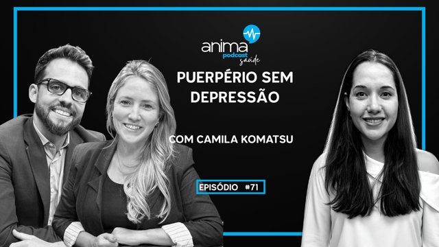
com Camila Komatsu · título na thumb: Puerpério sem depressão
▶ YouTube (canal Saúde) · ✎ Canva (pág. 32) · ☁ Drive · ⬇ Download PNG
com Drª Georgia Dorigon · título na thumb: Lipedema não é só gordura
▶ YouTube (canal principal) · ✎ Canva (pág. 10) · ☁ Drive · ⬇ Download PNG
com Moniele Cunha · título na thumb: 7 erros que te impedem de ser mãe
▶ YouTube (canal principal) · ✎ Canva (pág. 11) · ☁ Drive · ⬇ Download PNG
com Drª Renata Fróes · título na thumb: Acabando com a saúde das crianças
▶ YouTube (canal principal) · ✎ Canva (pág. 12) · ☁ Drive · ⬇ Download PNG
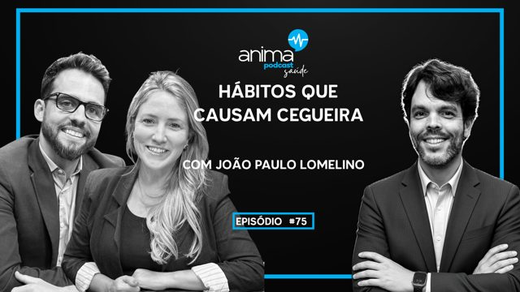
com Dr. João Paulo Lomelino · título na thumb: Hábitos que causam cegueira
▶ YouTube (canal principal) · ✎ Canva (pág. 13) · ☁ Drive · ⬇ Download PNG
com João Malheiro · título na thumb: A cura para o cansaço não é dormir
▶ YouTube (canal principal) · ✎ Canva (pág. 14) · ☁ Drive · ⬇ Download PNG
com Carolina Scarabucci · título na thumb: Autismo e TDAH é modinha?
▶ YouTube (canal principal) · ✎ Canva (pág. 15) · ☁ Drive · ⬇ Download PNG
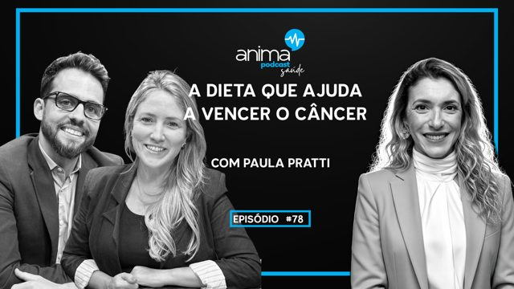
com Paula Pratti · título na thumb: A dieta que ajuda a vencer o câncer
▶ YouTube (canal principal) · ✎ Canva (pág. 16) · ☁ Drive · ⬇ Download PNG
com Thiago Andrade · título na thumb: Suicídio: sinais de alerta
▶ YouTube (canal principal) · ✎ Canva (pág. 17) · ☁ Drive · ⬇ Download PNG
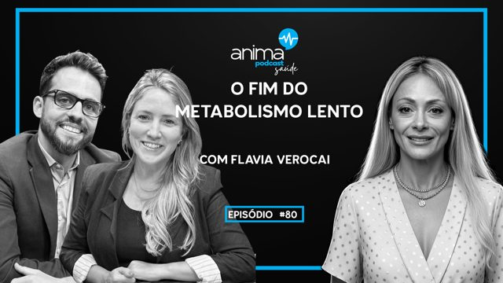
com Dra. Flavia Verocai · título na thumb: O fim do metabolismo lento
▶ YouTube (canal principal) · ✎ Canva (pág. 18) · ☁ Drive · ⬇ Download PNG
com Dr. Gleison Guimarães · título na thumb: Acordar cansado não é normal
▶ YouTube (canal principal) · ✎ Canva (pág. 19) · ☁ Drive · ⬇ Download PNG
com —
—
com Dra. Carolina Meireles · título na thumb: Autoimune causa infertilidade?
▶ YouTube (canal principal) · ✎ Canva (pág. 20) · ☁ Drive · ⬇ Download PNG
com Ana Luisa Rego Macedo
▶ YouTube (canal principal) · ✎ Canva (pág. 21) · ☁ Drive · ⬇ Download PNG
com Dr. Miguel Ceccarelli · título na thumb: O que as unhas dizem da saúde
▶ YouTube (canal principal) · ✎ Canva (pág. 22) · ☁ Drive · ⬇ Download PNG
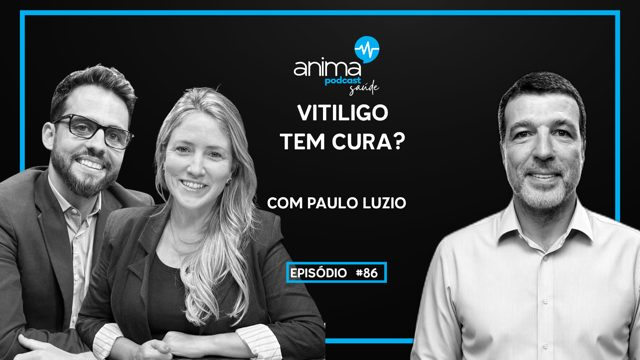
com Dr. Paulo Luzio · título na thumb: Vitiligo tem cura?
▶ YouTube (canal principal) · ✎ Canva (pág. 23) · ☁ Drive · ⬇ Download PNG
com Dr. Luis Trocado · título na thumb: O fim do efeito sanfona
▶ YouTube (canal principal) · ✎ Canva (pág. 24) · ☁ Drive · ⬇ Download PNG
com Dra. Larissa Abreu · título na thumb: Criança acordando à noite
▶ YouTube (canal principal) · ✎ Canva (pág. 25) · ☁ Drive · ⬇ Download PNG
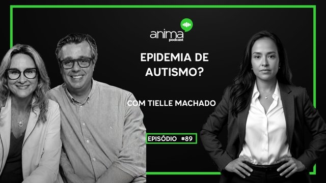
com Dra. Tielle Machado · título na thumb: Epidemia de autismo?
▶ YouTube (canal principal) · ✎ Canva (pág. 26) · ☁ Drive · ⬇ Download PNG
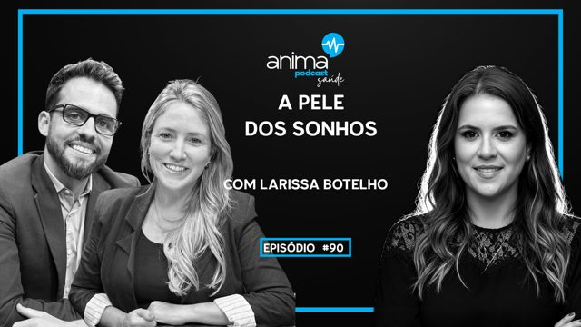
com Dra. Larissa Botelho · título na thumb: A pele dos sonhos
▶ YouTube (canal principal) · ✎ Canva (pág. 27) · ☁ Drive · ⬇ Download PNG
com Dra. Nathalia Vianna · título na thumb: Por que seu filho vive doente
▶ YouTube (canal principal) · ✎ Canva (pág. 28) · ☁ Drive · ⬇ Download PNG
com Dra. Mariana de Oliveira · título na thumb: Seu filho não fala? O motivo
▶ YouTube (canal principal) · ✎ Canva (pág. 29) · ☁ Drive · ⬇ Download PNG
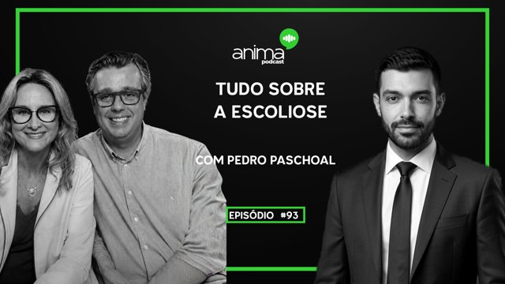
com Dr. Pedro Paschoal · título na thumb: Tudo sobre a escoliose
▶ YouTube (canal principal) · ✎ Canva (pág. 1) · ☁ Drive · ⬇ Download PNG
com Dra. Juliana Neves · título na thumb: Saúde mental da mulher
▶ YouTube (canal principal) · ✎ Canva (pág. 2) · ☁ Drive · ⬇ Download PNG
com Dra. Marcela Nardi · título na thumb: Mitos sobre o câncer de mama
▶ YouTube (canal principal) · ✎ Canva (pág. 3) · ☁ Drive · ⬇ Download PNG
com Casal Plástica · título na thumb: A nova era da cirurgia plástica
▶ YouTube (canal principal) · ✎ Canva (pág. 4) · ☁ Drive · ⬇ Download PNG
com Dra. Clariana Maurente · título na thumb: Ultrassom normal, sem gravidez?
▶ YouTube (canal principal) · ✎ Canva (pág. 5) · ☁ Drive · ⬇ Download PNG
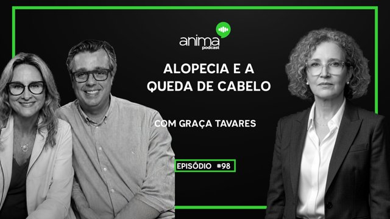
com Dra. Graça Tavares · título na thumb: Alopecia e a queda de cabelo
▶ YouTube (canal principal) · ✎ Canva (pág. 6) · ☁ Drive · ⬇ Download PNG
com Dr. Fernando Goslin · título na thumb: Tudo sobre a labirintite
▶ YouTube (canal principal) · ✎ Canva (pág. 7) · ☁ Drive · ⬇ Download PNG
com Dra. Andrea Melo · título na thumb: Como vencer o bruxismo
▶ YouTube (canal principal) · ✎ Canva (pág. 8) · ☁ Drive · ⬇ Download PNG
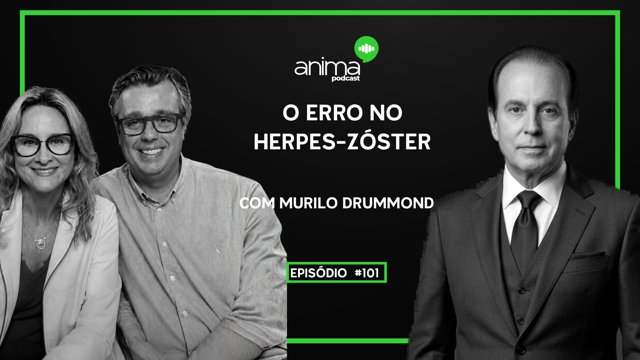
com Dr. Murilo Drummond · título na thumb: O erro no herpes-zóster
▶ YouTube (canal principal) · ✎ Canva (pág. 9) · ☁ Drive · ⬇ Download PNG
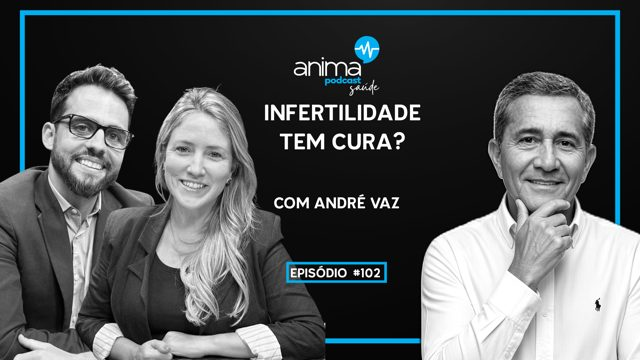
com Dr. André Vaz · título na thumb: Infertilidade tem cura?
▶ YouTube (canal principal) · ✎ Canva (pág. 10) · ☁ Drive · ⬇ Download PNG
com Dra. Mariana Francoti · título na thumb: A beleza da castidade
▶ YouTube (canal principal) · ✎ Canva (pág. 11) · ☁ Drive · ⬇ Download PNG
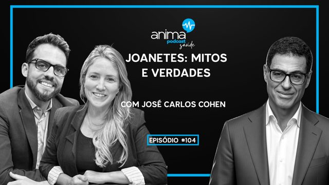
com Dr. José Carlos Cohen · título na thumb: Joanetes: mitos e verdades
▶ YouTube (canal principal) · ✎ Canva (pág. 12) · ☁ Drive · ⬇ Download PNG
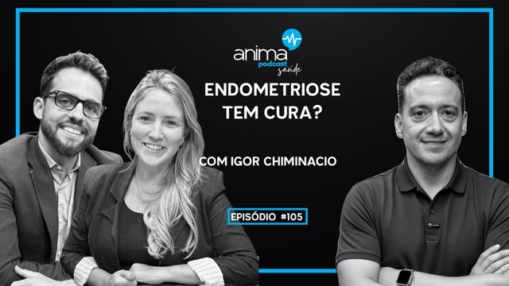
com Dr. Igor Chiminacio · título na thumb: Endometriose tem cura?
▶ YouTube (canal principal) · ✎ Canva (pág. 13) · ☁ Drive · ⬇ Download PNG
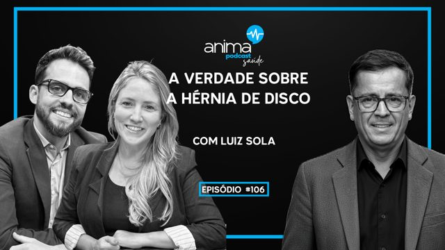
com Dr. Luiz Sola · título na thumb: A verdade sobre a hérnia de disco
▶ YouTube (canal principal) · ✎ Canva (pág. 14) · ☁ Drive · ⬇ Download PNG
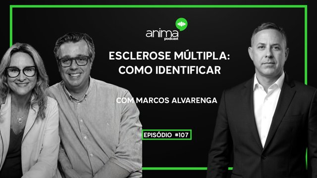
com Dr. Marcos Alvarenga · título na thumb: Esclerose múltipla: como identificar
▶ YouTube (canal principal) · ✎ Canva (pág. 15) · ☁ Drive · ⬇ Download PNG
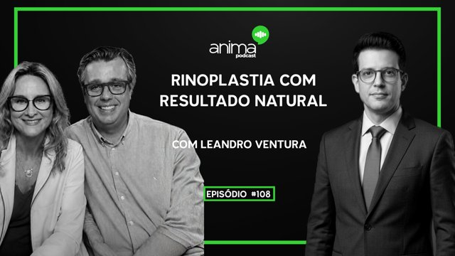
com Dr. Leandro Ventura · título na thumb: Rinoplastia com resultado natural
▶ YouTube (canal principal) · ✎ Canva (pág. 16) · ☁ Drive · ⬇ Download PNG
com Sylvia Campos · título na thumb: Intolerância à histamina
▶ YouTube (canal principal) · ✎ Canva (pág. 17) · ☁ Drive · ⬇ Download PNG
com Andréia Batista · título na thumb: Os segredos da alta performance
▶ YouTube (canal principal) · ✎ Canva (pág. 18) · ☁ Drive · ⬇ Download PNG
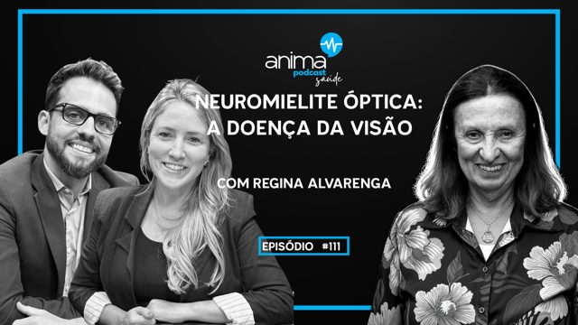
com Dra. Regina Alvarenga · título na thumb: Neuromielite óptica: a doença da visão
▶ YouTube (canal principal) · ✎ Canva (pág. 19) · ☁ Drive · ⬇ Download PNG
com Samia Marsili · título na thumb: Sexualidade e namoro na adolescência
▶ YouTube (canal principal) · ✎ Canva (pág. 20) · ☁ Drive · ⬇ Download PNG
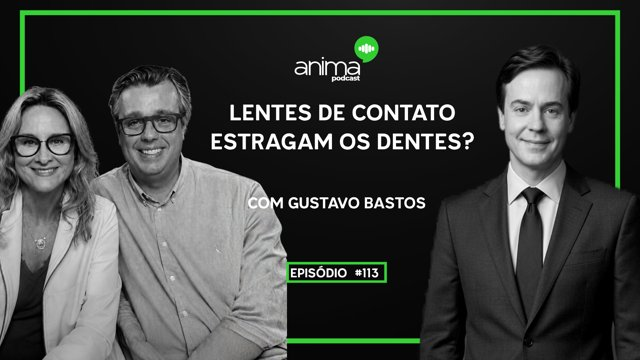
com Dr. Gustavo Bastos · título na thumb: Lentes de contato estragam os dentes?
▶ YouTube (canal principal) · ✎ Canva (pág. 21) · ☁ Drive · ⬇ Download PNG
com Dra. Patrícia Arias · título na thumb: Quando o desconforto vira alerta
▶ YouTube (canal principal) · ✎ Canva (pág. 22) · ☁ Drive · ⬇ Download PNG
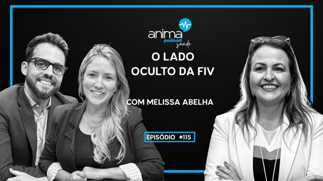
com Dra. Melissa Abelha · título na thumb: O lado oculto da FIV
▶ YouTube (canal principal) · ✎ Canva (pág. 23) · ☁ Drive · ⬇ Download PNG
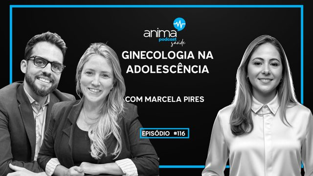
com Dra. Marcela Pires · título na thumb: Ginecologia na adolescência
▶ YouTube (canal principal) · ✎ Canva (pág. 24) · ☁ Drive · ⬇ Download PNG
com Dr. Marcelo Cury · título na thumb: Câncer de pele no rosto
▶ YouTube (canal principal) · ✎ Canva (pág. 25) · ☁ Drive · ⬇ Download PNG
com Dr. Higor Caldato · título na thumb: Quando comer vira sintoma
▶ YouTube (canal principal) · ✎ Canva (pág. 26) · ☁ Drive · ⬇ Download PNG
com —
—
com Dr. Guilherme Ravanini · título na thumb: Quando fazer a colonoscopia?
▶ YouTube (canal principal) · ✎ Canva (pág. 27) · ☁ Drive · ⬇ Download PNG
com Dr. Lucas Lameirão · título na thumb: A solidão mata como 15 cigarros
▶ YouTube (canal principal) · ✎ Canva (pág. 28) · ☁ Drive · ⬇ Download PNG
com Dra. Mariana Del Rei · título na thumb: Cosmético coreano funciona?
▶ YouTube (canal principal) · ✎ Canva (pág. 29) · ☁ Drive · ⬇ Download PNG